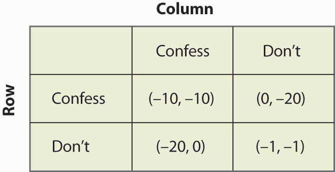
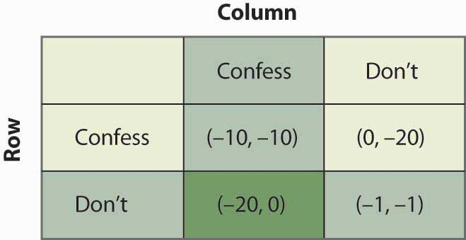
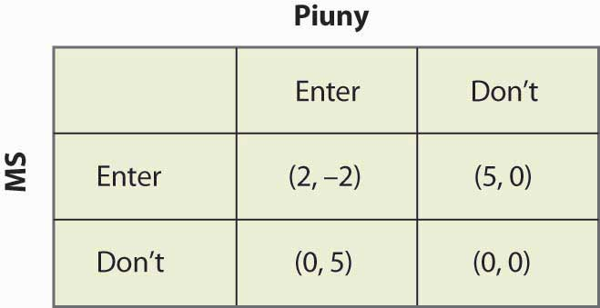
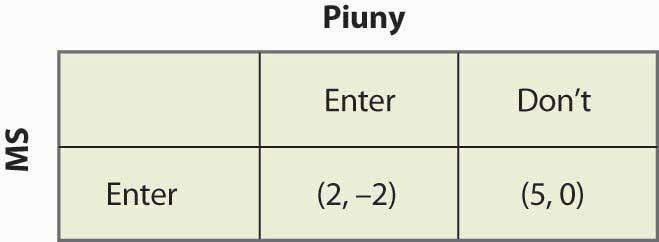
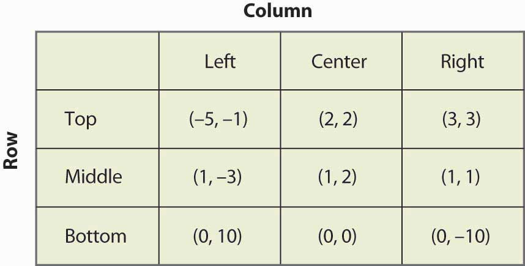
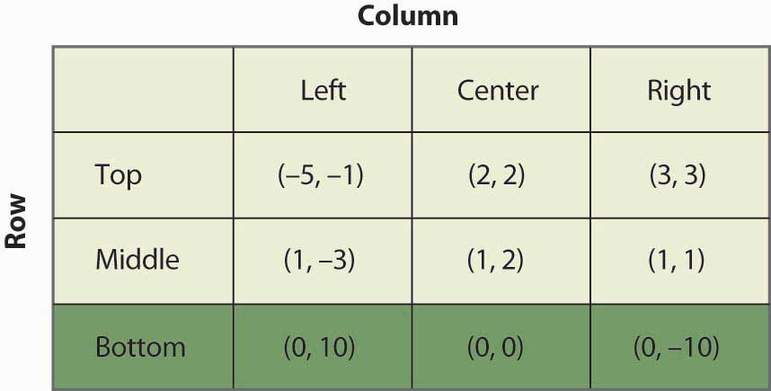
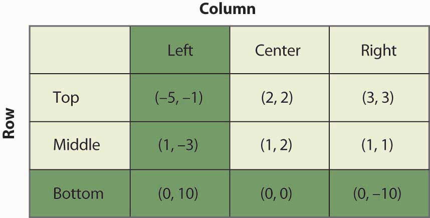
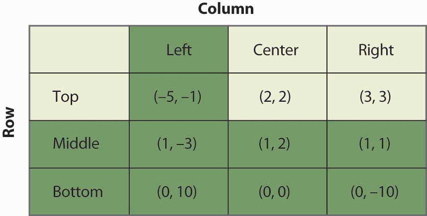
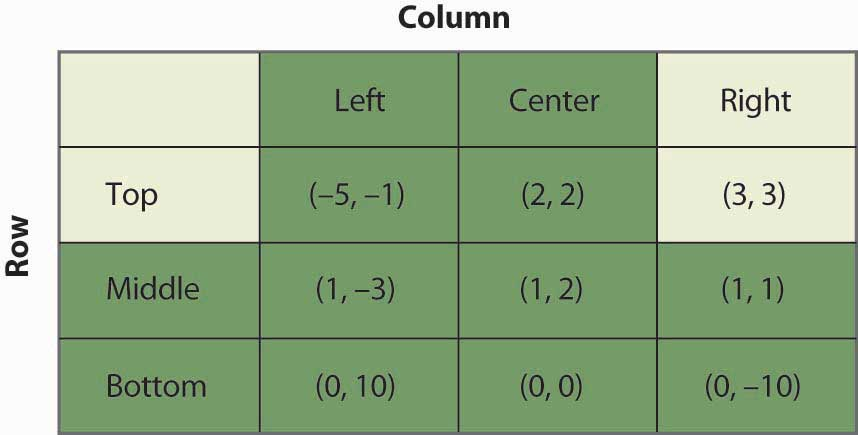

The simplest game is called a matrix payoff game with two players. In a matrix payoff gameGame in which all actions are chosen simultaneously., all actions are chosen simultaneously. It is conventional to describe a matrix payoff game as played by a row player and a column player. The row player chooses a row in a matrix; the column player simultaneously chooses a column. The outcome of the game is a pair of payoffs where the first entry is the payoff of the row player, and the second is the payoff of the column player. Figure 16.1 "The prisoner’s dilemma" provides an example of a “2 × 2” matrix payoff game—the most famous game of all—which is known as the prisoner’s dilemmaGame in which the strategies are to confess or not to confess; the first player to confess avoids jail.. In the game, the strategies are to confess or not to confess.
Figure 16.1 The prisoner’s dilemma
In the prisoner’s dilemma, two criminals named Row and Column have been apprehended by the police and are being questioned separately. They are jointly guilty of the crime. Each player can choose either to confess or not. If Row confesses, we are in the top row of the matrix (corresponding to the row labeled “Confess”). Similarly, if Column confesses, the payoff will be in the relevant column. In this case, if only one player confesses, that player goes free and the other serves 20 years in jail. (The entries correspond to the number of years lost to prison. The first entry is always Row’s payoff; the second entry is Column’s payoff.) Thus, for example, if Column confesses and Row does not, the relevant payoff is the first column and the second row.
Figure 16.2 Solving the prisoner’s dilemma
If Column confesses and Row does not, Row loses 20 years, and Column loses no years; that is, it goes free. This is the payoff (–20, 0) in reverse color in Figure 16.2 "Solving the prisoner’s dilemma". If both confess, they are both convicted and neither goes free, but they only serve 10 years each. Finally, if neither confesses, there is a 10% chance that they are convicted anyway (using evidence other than the confession), in which case they each average a year lost.
The prisoner’s dilemma is famous partly because it is readily solvable. First, Row has a strict advantage to confessing, no matter what Column is going to do. If Column confesses, Row gets –10 for confessing, –20 for not confessing, and thus is better off confessing. Similarly, if Column doesn’t confess, Row gets 0 for confessing (namely, goes free), –1 for not confessing, and is better off confessing. Either way, no matter what Column does, Row should choose to confess.If Row and Column are friends and care about each other, that should be included as part of the payoffs. Here, there is no honor or friendship among thieves, and Row and Column only care about what they themselves will get. This is called a dominant strategyA strategy that is optimal no matter what the other players do., a strategy that is optimal no matter what the other players do.
The logic is exactly similar for Column: No matter what Row does, Column should choose to confess. That is, Column also has a dominant strategy to confess. To establish this, first consider what Column’s best action is, when Column thinks Row will confess. Then consider Column’s best action when Column thinks Row won’t confess. Either way, Column gets a higher payoff (lower number of years lost to prison) by confessing.
The presence of a dominant strategy makes the prisoner’s dilemma particularly easy to solve. Both players should confess. Note that this gets them 10 years each in prison, and thus isn’t a very good outcome from their perspective; but there is nothing they can do about it in the context of the game, because for each the alternative to serving 10 years is to serve 20 years. This outcome is referred to as (Confess, Confess), where the first entry is the row player’s choice, and the second entry is the column player’s choice.
Figure 16.3 An entry game
Consider an entry game played by Microsoft (the row player) and Piuny (the column player), a small start-up company. Both Microsoft and Piuny are thinking about entering a new market for an online service. Figure 16.3 "An entry game" provides the payoff structure.
In this case, if both companies enter, Microsoft ultimately wins the market, earning 2 and Piuny loses 2. If either firm has the market to itself, it gets 5 and the other firm gets zero. If neither enters, they both get zero. Microsoft has a dominant strategy to enter: It gets 2 when Piuny enters, 5 when Piuny doesn’t, and in both cases it does better than when it doesn’t enter. In contrast, Piuny does not have a dominant strategy: Piuny wants to enter when Microsoft doesn’t, and vice versa. That is, Piuny’s optimal strategy depends upon Microsoft’s action; or, more accurately, Piuny’s optimal strategy depends upon what Piuny believes Microsoft will do.
Piuny can understand Microsoft’s dominant strategy if it knows the payoffs of Microsoft.It isn’t so obvious that one player will know the payoffs of another player, which often causes players to try to signal that they are going to play a certain way—that is, to demonstrate commitment to a particular advantageous strategy. Such topics are taken up in business strategy and managerial economics. Thus, Piuny can conclude that Microsoft is going to enter, and this means that Piuny should not enter. Thus, the equilibrium of the game is for Microsoft to enter and Piuny not to enter. This equilibrium is arrived at by the iterated elimination of dominated strategiesEliminating strategies by sequentially removing strategies that are dominated for a player., eliminating strategies by sequentially removing strategies that are dominated for a player. First, we eliminated Microsoft’s dominated strategy in favor of its dominant strategy. Microsoft had a dominant strategy to enter, which means that the strategy of not entering was dominated by the strategy of entering, so we eliminated the dominated strategy. That leaves a simplified game in which Microsoft enters, as shown in Figure 16.4 "Eliminating a dominated strategy".
Figure 16.4 Eliminating a dominated strategy
In this simplified game, after the elimination of Microsoft’s dominated strategy, Piuny also has a dominant strategy: not to enter. Thus, we iterate and eliminate dominated strategies again—this time eliminating Piuny’s dominated strategies—and wind up with a single outcome: Microsoft enters, and Piuny doesn’t. The iterated elimination of dominated strategies solves the game.A strategy may be dominated not by any particular alternate strategy but by a randomization over other strategies, which is an advanced topic not considered here.
Figure 16.5 "A 3 x 3 game" shows another game, with three strategies for each player.
Figure 16.5 A 3 x 3 game
The process of iterated elimination of dominated strategies is illustrated in Figure 16.6 "Eliminating a dominated strategy" by actually eliminating the rows and columns, as follows. A reverse color (white text on black background) indicates a dominated strategy.
Middle dominates Bottom for Row, yielding:
Figure 16.6 Eliminating a dominated strategy
With Bottom eliminated, Left is now dominated for Column by either Center or Right, which eliminates the Left Column. This is shown in Figure 16.7 "Eliminating another dominated strategy".
Figure 16.7 Eliminating another dominated strategy
With Left and Bottom eliminated, Top now dominates Middle for Row, as shown in Figure 16.8 "Eliminating a third dominated strategy".
Figure 16.8 Eliminating a third dominated strategy
Finally, as shown in Figure 16.9 "Game solved", Column chooses Right over Center, yielding a unique outcome after the iterated elimination of dominated strategies, which is (Top, Right).
Figure 16.9 Game solved
The iterated elimination of dominated strategies is a useful concept, and when it applies, the predicted outcome is usually quite reasonable. Certainly it has the property that no player has an incentive to change his or her behavior given the behavior of others. However, there are games where it doesn’t apply, and these games require the machinery of a Nash equilibrium, named for Nobel laureate John Nash (1928–).